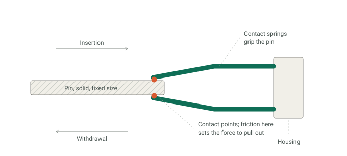
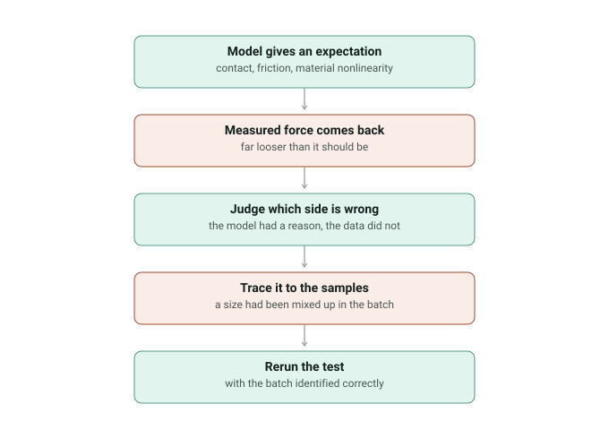

Ten months on one question: how a circular aerospace connector loses its grip. I built the finite element models that predicted it and ran the bench tests that checked them, which meant I was on both sides of every disagreement between the two.
Under NDA. No part numbers, geometry or measured data appear here. The diagrams are mine, drawn at a generic level.
What the model had to capture

The interesting physics sits at two small contact points. A pin of fixed size goes into a socket; the springs inside deflect around it and hold it there. What it takes to pull the pin back out comes from how hard those springs press and how much friction that produces — not from anything you can read off a drawing.
So the Abaqus models had to carry pin-to-socket contact, friction, and nonlinear material behaviour together, and what came out of them was insertion and withdrawal force and contact resistance. In ANSYS I ran thermal-electrical coupling to find where heat concentrated, and harmonic response to find where the structure would ring — a connector on an aircraft has to keep contact through a vibration spectrum, not just sit still on a bench.
Ageing them on purpose
Prediction only means something against parts that have actually been through something. We soaked connectors in ovens across a range of temperatures, held them there, and then measured what it took to push a pin in and pull it out — every part number, every temperature.

Insertion force barely moved. Withdrawal force held, and then past a certain temperature it fell away. The asymmetry is the finding. Insertion is mostly about pushing the springs open; withdrawal is about how hard they are still pressing afterwards. When only the second one degrades, the springs are relaxing — holding their deflection at temperature until they stop pushing back as hard as they did. And because relaxation is thermally activated, it stays slow until it isn't, which is the knee.
A design change with no room to move
The pin is solid and its size is fixed by the mating standard, so nothing on that side of the interface can change. Any improvement had to come from the socket. I was in the discussions on what to change there and ran the calculations behind them; the revised geometry brought peak stress down by about 12%.
Python did the post-processing. Stress, displacement and temperature fields came out of every run without anyone exporting them by hand, which is what made successive design revisions directly comparable instead of approximately comparable.
When the model and the bench disagreed

One batch came back loose. Not slightly loose — loose enough that I looked at it and thought it could not be right.
The reflex in that situation is to assume the bench is truth and go back to adjust the model until it agrees. I did not have that reflex here, because the model had reasons behind every number in it and the measurement did not have a reason to be that far off. So the question became which side to doubt, and I went after the test. The samples had been mixed up: a larger size had gone through as a smaller one, so the fit was never what the record said it was. Once the batch was identified correctly and the test rerun, the two agreed.
That is what a year of correlating predictions against physical data actually taught me. A model is a claim that has to be checked — and so is a measurement.